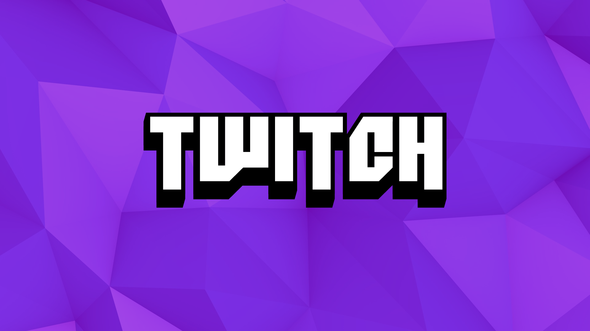

Introdução
Com a popularização dos jogos eletrônicos, as empresas que desenvolvem jogos começaram a nos trazer um catálogo ainda maior com vários estilos diferentes, sendo alguns deles, os queridinhos da galera. Com o tempo e fama desses jogos, torneios começaram a surgir e com fãs.
Pessoas que já jogavam por diversão, foram desenvolvendo maneiras de tornar isso uma maneira de ganhar uma renda extra ou até mesmo sua única fonte de renda buscando plataformas que os ajudassem com isso. As empresas viram isso como lucro e foi assim que se iniciou a era dos influenciadores digitais que jogam para entreter seu público, os Gamer.
Hoje em dia, os jogos eletrônicos deixam de ser apenas hobbie e passa a ser uma opção, tanto de ser um jogador profissional ou um streamer de jogos, mas não é uma caminho fácil sendo essa uma área muito concorrida. Times como INTZ, LOUD, MIBR e muitos outros vão conquistando mais ainda, um espaço no coração de seus fãs. E Streamer como Alanzoka, Gaules e YoKA vão se tornando uma inspiração de que jogos podem ser sim uma maneira de se sustentar a partir de jogos eletrônicos.
leia mais...
Streamers:
A Twitch é uma das mais conhecidas plataformas de streaming contando com números monstruosos, que deixa qualquer uma de suas concorrentes muito atrás e com inúmeros streamer famosos que usam da plataforma para fazer as suas live.
Streamer afiliado: Se você conseguir bons números e atingir algumas metas você poderá se tornar um afiliado da Twitch. Com isso as pessoas poderão se inscrever em seu canal (o que já começamos a ganhar dinheiro), você terá acesso a mudar a qualidade de sua transmissão (de acordo com a disponibilidade de banda do horário). Além de começar a ser remunerado e a ganhar dinheiro no Twitch, pelas propagandas em suas transmissões. Além disso, a partir do momento que você se torna afiliado você pode começar a receber “cheering” que são gorjetas que seus espectadores podem te dar. Eles podem fazer isso usando Bits que são as moedas virtuais da Twitch.
Parceiro da Twitch: Os parceiros da Twitch são streamers selecionados que tem tudo liberado. Desta forma além das formas de remuneração que um afiliado pode ter ele ainda consegue uma divulgação muito maior por parte da Twitch. Este é o ponto mais alto que um streamer pode chegar na Twitch.

Kalera:
Camila: "Kalera" Vieira é uma streamer famosa por jogar Rainbow Six: Siege. nos seus canais do YouTube e na Twitch TV, a carioca de 28 anos de idade também tem experiência com maquiagem e ainda é cantora, dubladora e desenhista. Além disso, Kalera atua em prol de ações inclusivas ligadas às causas raciais e LGBTQI+, e em fevereiro de 2021 foi anunciada como nova streamer da FURIA.
Maethe:
Streamer de Overwatch, The Sims 4, Animal Crossing e outros, Maethe anima o público com a sua risada contagiante. Formada em veterinária, ela também compartilha com o chat sobre a vida com seus dois gatos, Ellie e Remy. Com mais de 271 mil seguidores no seu canal da Twitch, Maethe revelou que realizou um dos seus sonhos ao dublar Jenny Jenny, personagem do jogo brasileiro Dandy Ace.
Beatriz: "beamom" é uma mulher trans que tem suas lives focadas em League of Legends, Valorant, Overwatch e jogos de survival horror. A streamer, que tem uma relação de amor e ódio com FPS, arranca gargalhadas do chat com os seus rages. Mono Lux, a criadora de conteúdo, também gosta de jogar de Seraphine na rota inferior com o seu duo. A streamer ganhou mais notoriedade com as lives de GTA RP e, sempre que pode, imita a sua personagem do jogo, Dona Eva. Além das lives de jogos, beamom ainda gosta de assistir MasterChef e fazer maquiagem para os dias comemorativos, como Halloween e Carnaval.
Gaules:
Além de ser streamer ele também é um ex-jogador profissional (além de ex-técnico) de Counter Strike. É bastante reconhecido no cenário gamer, não só em jogos de FPS. Dentre os streamers que tiveram a remuneração da Twitch entre 2019 e 2021 ele foi o primeiro colocado, com o valor de US$ 2,8 milhões, que hoje em dia equivale a R$ 14,3 milhões.
Alanzoka:
Alan Ferreira pode ser considerado o maior streamer do cenário brasileiro, com mais de 5,7 milhões de seguidores na Twitch e mais de 2 milhões de seguidores no Youtube, sem contar suas outras redes sociais. Além do valor recebido pela monetização, o produtor de conteúdo também realiza parcerias com empresas e marcas, patrocínios pessoais e, claro, doações de fãs aumentando ainda mais sua renda.
Cellbit:
Além do streamer possuir 2,3 milhões de seguidores na Twitch, ele também possui um jogo que está em pré-venda, chamado Ordem Paranormal: Enigma do Medo, que foi monetizado em R$ 4,2 milhões em seu projeto inicial, que também possui uma versão física e um livro. (é um RPG). As lives de seu jogo alcançaram um número recorde no nicho.
leia mais...